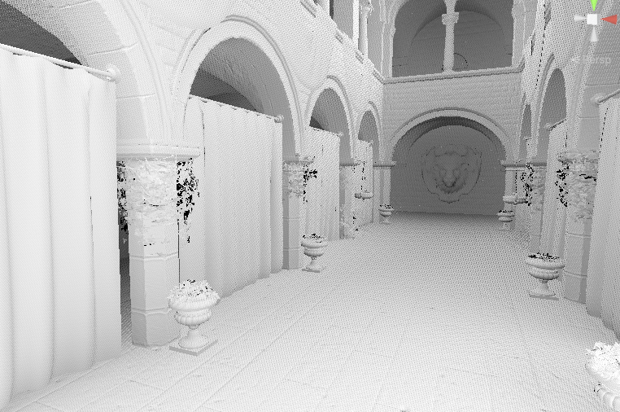

GTAO
既然HBAO实现了，那就再进一步，看看GTAO到底有多GT。
主要参考了原始论文与作者发布的PPT，以及Github上一开源的GameTechDev/XeGTAO，外加HDRP自带的GTAO的实现。

先大致翻译一下原始论文吧
摘要
环境光遮蔽是游戏和其他实时应用中用来近似全局光照效果的一种普遍方法。然而，对于任意场景的环境光遮蔽积分并不存在解析解，使用一般的数值积分算法太慢，因此实际中常常对这种近似进行经验性的调整，以使其在外观上看起来令人满意，即使它们并没有准确地计算环境光遮蔽积分。在这项工作中，我们引入了一种新的环境光遮蔽表达方式，即GTAO，在当前主机硬件上能够在半毫秒内匹配基准真实值。这是通过使用环境光遮蔽方程的另一种表达方式以及一种有效的实现来实现的，该实现使用时空滤波来分布计算。然后，我们通过一种新颖的技术扩展了GTAO，该技术考虑了近场全局光照，而在仅使用环境光遮蔽时会丢失这种效果。最后，我们引入了一种用于镜面遮蔽的技术，即GTSO，与环境光遮蔽相称，允许从基于探针的光照中计算逼真的镜面反射。我们的技术高效，结果接近光线追踪的基准真实值，并已集成到最近的AAA主机游戏中。
1 介绍
全局光照是一项重要的视觉特性，在逼真渲染中具有决定性作用，因为感知场景照明的很大一部分来自间接反射。然而，通常情况下，计算全局光照非常昂贵，目前无法包含在实时应用中，除非进行严重的简化。
在这些近似模拟中，环境光遮蔽（AO）是最受欢迎的近似模拟之一，因为它改善了对物体形状（对比度）的感知，并捕捉了全局光照中一些最重要的效果，特别是由于附近遮挡物引起的软阴影效果。环境光遮蔽还可以与其他全局光照算法一起使用，甚至在使用预计算（烘焙）辐照度时也很有用，因为这些效果通常需要以相对较低的空间分辨率计算（或存储），因此逐像素计算环境光遮蔽可以增强间接照明的整体外观。不幸的是，在某些情况下（例如在1080p分辨率下以60帧每秒渲染），计算环境光遮蔽积分仍然很昂贵，因此过去已经开发了近似方法以实现足够快的性能。
我们引入了一种名为基准真实环境光遮蔽（GTAO）的新型屏幕空间技术，旨在在速度足够快的情况下匹配真实环境光遮蔽，并适用于高要求的应用，例如现代主机游戏。我们的技术基于基于地平线(horizon-based)的方法，但使用问题的另一种表达方式。这种表达方式使我们能够显著降低效果的成本，并且在假设我们的场景被表示为高度场（深度缓冲）的情况下，仍然可以用来精确解决环境光遮蔽积分问题。我们通过使用时序投影和空间滤波来高效地实现我们的技术，每帧仅需0.5毫秒即可计算出无噪声的环境光遮蔽解决方案（在索尼Playstation
4上，适用于以1080p分辨率运行的游戏）。
基于这种表达方式，我们扩展了我们的环境光遮蔽解决方案，以模拟在仅使用环境光遮蔽时通常被忽视的一组照明效果。一方面，我们引入了一种近似技术，可以计算出一个非常快速的校正因子，以考虑近场全局光照效果。这种技术基于以下观察结果：局部表面反照率与环境光遮蔽项之间存在关系，以及多次反射的近场照明。根据这个观察结果，我们开发了一种高效、简单和局部的技术，以考虑在仅计算环境光遮蔽时丢失的局部照明效果。
最后，我们介绍一种新的技术，与环境光遮蔽对称，但适用于任意镜面材料，我们称之为基准真实镜面遮蔽”（GTSO）。我们开发了它的表达形式，并提出了一种基于近似的技术来计算它，该技术将可见性近似为弯曲法线和点处环境光遮蔽的函数。GTSO能够有效地计算基于探针的光照下的镜面反射，同时考虑了表面的遮蔽情况。
即分成三个部分
- GTAO 用来做环境光遮蔽
- 近场全局光照
- GTSO 镜面反射遮蔽，减少反射漏光。有点类似与HDRP使用BentNormal来减少漏光，这里直接从深度法线中生成全局的BentNormal
2 背景与相关工作
从一个有着法线nx的点x沿朝向方向ωo反射的辐射Lr(x,ωo)可以建模为：
$$ \begin{equation} \begin{aligned} L_r(x, \omega_o) = \int_{\mathcal{H} ^2} L_i(x, \omega_i) f_r(x, \omega_i, \omega_o) \langle n_x, \omega_i \rangle ^+ d\omega_i \end{aligned} \tag{1} \end{equation} $$
其中ℋ2是以x为中心，nx为其轴的半球体，Li(x,ωi)是从方向ωi到x的入射辐照度，fr(x,ωi,ωo)是x处的双向反射分布函数（BRDF），〈nx, ωi〉+是一个递归运算符，依赖于整个场景中的反射（和发射）辐射。虽然许多研究都集中在解决这个问题上，但在像游戏等高要求的场景中，它仍然过于昂贵。在这里，我们关注环境光遮蔽技术，并参考Ritschel等人的调查报告[RDGK12]中关于该领域的更广泛的概述。
环境光遮蔽[ZIK98]通过引入一系列假设来近似方程(1)：
- 所有光来自于一个无限均匀的环境光源，可能会被x周围的几何物体遮蔽
- x周围的所有表面都是纯吸收的（即不反射任何光）
- x处的表面是漫反射的。这将方程(1)转化为：
$$ \begin{equation} \begin{aligned} L_r(x, \omega_o) &= L_i\frac{ \rho(x)}{\pi} \int_{\mathcal{H}^2} V(x, \omega_i) \langle n_x, \omega_i \rangle ^+ d\omega_i \\ &=L_i \frac{ \rho(x)}{\pi} \mathcal{A}(x) \end{aligned} \tag{2} \end{equation} $$
其中 𝒜(x) 表示点 x 处的环境遮蔽项，$\frac{ρ(x)}π$ 为反射率为 ρ(x) 的漫反射双向反射分布函数（BRDF），而 V(x,ωi) 是点 x 处在方向 ωi 上的可见性项，如果在方向 ωi 上存在比给定距离 r 更近的遮挡物，则返回 0，否则返回 1。
请注意，之前的研究[ZIK98，Mit07，BSD08]将可见性项 V(x,ωi) 建模为相对于遮挡物距离的衰减函数，将 𝒜(x) 称为遮蔽度。这种衰减函数是一个临时解决方案，以避免忽略近场互反射产生的典型环境光遮蔽过度变暗的问题；
与之相反，我们引入了一种新的公式来添加这部分丢失的光线（第5节），同时保持辐射度上正确的环境遮蔽项。
那看这意思还需要引入近场全局照明才能补充这部分？
值得注意的是，还有一种环境遮蔽的替代定义，其中忽略了视角变形：尽管在本文的其余部分中，我们遵循辐射度正确的余弦加权公式，但在附录 A 中，我们描述了我们在这种替代形式下的技术。
SSAO
环境遮蔽项 𝒜(x) 受到场景中所有几何体的影响，通常通过射线追踪来计算[ZIK98]，尽管也存在适用于交互式渲染的基于点的方法[Bun05，REG+09]。然而，这对于实时应用来说仍然过于昂贵。为了避免昂贵的三维全场景可见性计算，Mittring [Mit07] 提出将所有计算移动到屏幕空间，假设只有相机可见的几何体才起到遮挡物的作用。这是通过在点 x 周围的球形区域内采样场景的 GPU 深度图，并评估点在深度图中是否被遮蔽（在后面）。从那以后，对屏幕空间采样方法进行了几次改进，改进了采样策略[LS10，SKUT+10，HSEE15]并通过滤波来减少噪声[MML12]。
HBAO
Bavoil 等人在文献 [BSD08]
中提出，根据光线可以到达的最大地平线角来计算非遮蔽区域。他们将积分域转化为一组由表面切线ϕ参数化的方向，然后在每个方向上计算总的非遮蔽立体角，将方程（2）转化为：
$$
\mathcal{A}(x) \approx \hat{A}(x) = \frac{1}{\pi} \int_{0}^{\pi}
\int_{-\frac{\pi}{2}}^{\frac{\pi}{2}} V(\phi, \theta) \left|
\sin(\theta) \right| d\theta d\phi \tag{3}
$$
在这里，1/π 项用于归一化至
1（即 𝒜(x) ∈ [0,1]）。请注意，在这里我们区分实际的环境遮蔽
𝒜(x) 和近似的屏幕空间项 Â(x)。
Alchemy Ambient Obscurance [MOBH11, MML12] 后来改进了屏幕空间方法的鲁棒性，并增加了所使用的采样过程的效率。虽然 HBAO 的效率相对较高，但仍然昂贵，因为在查找最大地平线时，需要针对每个像素从深度图中收集许多样本。Timonen [Tim13a] 通过在整个图像上执行线性扫描来改进这一点，从而使他能够通过将采样分摊到图像中的多个像素上，在常数时间内找到给定方向的最大地平线角。与我们的工作相似，同一作者 [Tim13b] 提出了一种新的环境遮蔽估计方法，通过线性扫描和过滤深度图，能够以很小的代价匹配真实解，从而可以计算非常大的聚集半径下的环境遮蔽，覆盖整个屏幕。
我们的工作通过提出一种高效的环境遮蔽公式来改进这些工作，无需临时的衰减函数，通过允许非常高效的分析积分来节省计算时间。避免使用临时衰减函数的关键是我们对于包括近场遮蔽体的间接照明的高效近似。此外，所有这些工作都假设是漫反射表面：相反，我们将环境遮蔽的概念推广到非兰伯特表面，引入了一种处理镜面遮蔽的技术。
3 总览
在这项工作中，我们有两个主要目标：
一方面，我们的目标是拥有一种能够与真实结果匹配的环境遮蔽技术，同时又足够高效，可以在要求严格的实时应用中使用。
另一方面，我们希望扩展可以被有效近似的全局光照效果的范围。
第一个目标在输入数据、通道数量和指令数量方面施加了严格限制。受到这些限制，我们开发了一种在屏幕空间中工作的技术，仅以深度缓冲和表面法线作为输入（这些法线可以通过微分从深度缓冲中导出，或者可以单独提供），并且可以与其他全局光照源（特别是烘焙的辐照度）共存并增强。
为了实现第二个目标，我们放松了传统环境遮蔽的一些假设。特别地，虽然我们保持白色（或单色）圆顶照明的假设，但我们放宽了纯朗伯表面的假设，包括了近场遮蔽体的漫反射互反射效应。
消除先前的限制，我们可以将方程（2）转换为
$$
L_r (x, \omega_o) = (1 - F (\omega_o)) L_i \frac{ \rho(x)} { \pi}
\mathcal{G}(\mathcal{A}(x)) + F(\omega_o) \mathcal{L}(x, \omega_o)
\mathcal{S}(x), \tag{4}
$$
其中，F 表示菲涅尔反射项，𝒜(x) 是我们的环境光遮蔽项（第4节），它与基准真实结果相匹配，我们称之为基准真实环境光遮蔽（GTAO）。𝒢(x) 是一个函数，基于环境光遮蔽项，引入了漫反射近场间接光照（第5节），而 𝒮(x) 则是镜面遮蔽项（第6节），它与预卷积的 BRDF ℒ 相乘。接下来，我们将对这些项逐一进行阐述。
4 GTAO
我们对环境光遮蔽的构建遵循了 Bavoil 等人的基于地平线的方法 [BSD08]，但是我们做出了一些关键的差异，使得在不牺牲质量的前提下能够进行高效的计算。
首先，我们重新构建了地平线计算所依据的参考坐标系，从而重新定义了积分域：我们遵循 Timonen [Tim13a] 的方法，相对于视角向量 ωo 计算地平线角（见图2）。这意味着地平线在围绕点 x 的整个球面范围内进行搜索，并且球面积分轴被设置为 ωo。实际上，这使我们能够简化表述，正如我们稍后将看到的，还可以减少所需的超越函数数量。
第二个主要的差异是，与 Bavoil 的工作不同，我们的可见性项 V(ϕ,θ) 仅是一个二元函数，而不是关于遮蔽距离的连续衰减函数（环境光遮蔽）。以这种方式构建环境光遮蔽允许我们将方程（3）的内部积分简单地计算为方向 ϕ 的两个最大地平线角度 θ1(ϕ) 和 θ2(ϕ) 之间弧线的积分。在围绕 ωo 进行积分，并使用二元可见性项，将方程（3）转化为：
$$ \mathcal{A}(x) = \frac{1}{\pi} \int_{0}^{\pi} \underbrace{\int_{\theta_1(\phi)}^{\theta_2(\phi)} \cos(\theta - \gamma) ^+ \lvert \sin(\theta) \rvert d\theta }_{a} d\phi \tag{5} $$
其中，γ 是法线 nx 和视角向量 ωo 之间的角度，而 cos(θ)+ = max (cos(θ),0)。事实上，这个公式的构造非常重要，因为它允许解析地计算内部积分 â，同时与基准真实环境光遮蔽匹配。这意味着只需要通过随机的 ϕ 进行蒙特卡洛积分，来数值地计算最外层的积分。在接下来的部分，我们将详细说明如何计算地平线角和内部积分 â。
计算最大地平线角度
在解方程（5）中，关键是要找到图像平面上由旋转角度 ϕ 参数化的方向 t̂(ϕ) 的最大地平线角度 θ1(ϕ) 和 θ2(ϕ)。为了做到这一点，我们在像素x̂（点 x 的投影像素）的 n × n
邻域中，分别在屏幕空间方向 t̂(ϕ) 和 − t̂(ϕ)
上进行搜索，以获取每个角度，并相对于视角向量 ωo
获得最大地平线角度，如下所示：
$$
\begin{equation}
\begin{aligned}
\theta_1(\phi) = \arccos\left( \max_{s<n/2} \left \langle \omega_s,
\omega_o \right \rangle ^+ \right)
\end{aligned} \tag{6}
\end{equation}
$$
其中，$ω_s = \frac{s - x}{\lVert s - x \rVert}$，而 s 是图像平面上像素的世界空间投影，定义为 ŝ = x̂ + t̂(ϕ) ⋅ s。角度 θ2 的计算类似，只是使用 ŝ = x̂ − t̂(ϕ) ⋅ s。请注意，邻域 n 的大小根据相机距离进行缩放：这是为了使 Â(x) 与视角无关，并且将其限制为像素的最大半径，以避免在靠近近裁剪平面的非常近的物体上产生过大的聚集半径，这会不必要地破坏 GPU 缓存。
鉴于我们只关心辐射度立体角，我们只需要跟踪最大角度，而不需要像以前的工作中那样跟踪其他量（例如最大距离）。这允许在 AMD GCN 硬件 [AMD12]（我们的目标平台）上只使用一个四分之一速度指令（rsqrt）来计算搜索循环。使用这个公式，着色器完全受内存限制。
计算内部积分
Timonen [Tim13a] 通过在运行时访问预计算结果的查找表来计算这个积分（包括衰减函数）。然而，我们公式的一个关键特性是，在给定我们计算的地平线角度 θ1 和 θ2 的情况下，我们可以解析地求解方程（5）中的内部积分 â，如下所示：
$$ \begin{equation} \begin{aligned} a &= \frac{1}{4} \left( -\cos(2\theta_1 - \gamma) + \cos(\gamma) + 2\theta_1 \sin(\gamma) \right) \\ &+ \frac{1}{4} \left( -\cos(2\theta_2 - \gamma) + \cos(\gamma) + 2\theta_2 \sin(\gamma) \right) \end{aligned} \tag{7} \end{equation} $$
需要注意的是，这个公式要求法线 nx 位于由 t̂(ϕ) 和 ωo 定义的平面 P 上，但通常不满足这个条件。按照 Timonen [Tim13a] 的方法，我们将角度 γ 定义为规范化投影法线 $\frac{\overrightarrow{n_x}}{||n_x||} \in P$ 与 ωo 之间的角度，即 $γ = \arccos\left(\langle \frac{\overrightarrow{n_x}}{\lVert n_x \rVert}, \omega_o \rangle\right)$。然后，我们通过法线 nx 的范数对点积进行修正，这使得方程（5）变成如下形式：
$$ \hat{A}(x) = \frac{1}{\pi} \int_{0}^{\pi} \lVert \overrightarrow{n_x} \rVert \hat{a}(\phi) d\phi \tag{8} $$
我们发现我们的解析解非常快，特别是在使用快速的acos和sqrt指令[Dro14]的情况下。在超越函数方面，经过优化，我们的代码只包含2个cos和1个sin，再加上另外三个acos函数用于设置积分域。这使得我们的着色器在内存方面受限，所需的ALU操作在性能方面几乎没有什么差异。
4.1 实现细节
我们的技术受内存限制，因此内存访问次数决定了目标平台的最终性能。鉴于我们的性能目标是将技术集成到以每秒60帧运行的游戏中，我们只有大约半毫秒的时间来进行计算，这使得实现优化变得必要。一方面，我们在半分辨率上计算环境光遮蔽，然后将其上采样到全分辨率。此外，为了在不损害性能的情况下计算尽可能多的样本，我们将遮蔽积分分布在空间和时间上：我们在每个像素中仅采样一个方向的地平线，但使用双边滤波器对4×4的邻域内的信息进行重建。此外，我们通过在6个不同的旋转之间交替，并使用指数累积缓冲重新投影结果，积极利用时间相干性。所有这些使每个像素有总共 4 × 4 × 6 = 96 个有效采样方向。图3展示了空间和时间聚集对最终重建的影响。
与环境光遮蔽技术不同，我们的表述中不考虑任何衰减函数，这可能导致计算出的遮蔽出现突然的不连续性，尤其是当我们的聚集半径未覆盖整个屏幕时。为了最小化伪影，我们采用了一种保守的衰减策略。思路是确保基准真实近场遮蔽，而对于远场遮蔽将其衰减为零，因为通常情况下，远场遮蔽与间接光照在我们的用例中是一起处理的。我们的衰减函数是从给定的足够大的距离开始，线性混合从1到0，直到最大的搜索半径。
最后，由于我们无法从深度缓冲区推断出物体的厚度，薄的特征往往会产生过多的遮蔽，从而不太真实。虽然可以通过深度剥离等方法来解决这个问题，但在我们的情况下不切实际。相反，我们引入了一种保守的启发式方法，该方法基于这样的假设：物体的厚度与其屏幕空间大小相似。这种启发式方法对地平线搜索（方程（6））进行了修改，因此对于搜索的每次迭代
s ∈ [1, n/2]，我们更新地平线角 θ 如下：
$$
\theta = \begin{cases}
\max(\theta_s, \theta) & \text{if } \cos(\theta_s) \geq
\cos(\theta_{s-1}) \\
\text{blend}(\theta_{s-1}, \theta_s) & \text{if } \cos(\theta_s)
< \cos(\theta_{s-1})
\end{cases} \tag{9}
$$
其中，blend 是基于指数移动平均的混合运算符，而 θ0 = 0。这种启发式方法还具有不会对简单角落（例如墙壁）的遮蔽结果产生偏见的特性，而这在我们的应用中是常见的情况。图4展示了这个启发式方法的效果。
GTAO的部分到此为止了，再下面就是光照和GTSO的部分了，有精力再说吧。
HDRP实现
然后再看看HDRP是怎么实现的
GTAO.compute
用的是计算着色器
从最关键的GTAOMain函数入手
float currDepth = GetDepthForCentral(dispatchThreadId.xy);
float3 positionVS = GetPositionVS(dispatchThreadId.xy, currDepth);取深度，重建计算视角空间坐标
float4 normalBufferData = LOAD_TEXTURE2D_X(_NormalBufferTexture, dispatchThreadId.xy);取法线
float offset = GetOffset(dispatchThreadId.xy);
float2 rayStart = dispatchThreadId.xy;
float integral = 0;偏移包含了空间偏移与时序偏移。
射线起点用的是屏幕空间。
integral是用来累加计算的。
#ifdef TEMPORAL
const int dirCount = 1;
#else
const int dirCount = _AODirectionCount;
#endif依据是否启用时序来决定切面的数量。
float3 V = normalize(-positionVS);
float fovCorrectedradiusSS = clamp(_AORadius * _AOFOVCorrection * rcp(positionVS.z), _AOStepCount, _AOMaxRadiusInPixels);
float step = max(1, fovCorrectedradiusSS * _AOInvStepCountPlusOne);因为是视线空间，取反即视线向量。
依据fov和位置远近，确定采样半径和步长。
float2 dir = GetDirection(dispatchThreadId.xy, i);
float2 negDir = -dir + 1e-30;
// Find horizons
float2 maxHorizons;
maxHorizons.x = HorizonLoop(positionVS, V, rayStart, dir, offset, step, 0);
maxHorizons.y = HorizonLoop(positionVS, V, rayStart, negDir, offset, step, 0);然后就开始遍历方向。
确定方向，正反两个方向取找到最大水平角度。
这里的GetDirection和HorizonLoop之后再说。
float3 normalVS = GetNormalVS(normalBufferData);取法线
float3 sliceN = normalize(cross(float3(dir.xy, 0.0f), V.xyz));
float3 projN = normalVS - sliceN * dot(normalVS, sliceN);
float projNLen = length(projN);
float cosN = dot(projN / projNLen, V);sliceN是切面的法线
projN表面法线在切面上的投影，简称投影法线
cosN即表面法线与视线的投影
float3 T = cross(V, sliceN);
float N = -sign(dot(projN, T)) * GTAOFastAcos(cosN);T：表面的切线
N：投影法线与视线的角度
maxHorizons.x = -GTAOFastAcos(maxHorizons.x);
maxHorizons.y = GTAOFastAcos(maxHorizons.y);反三角，求出对应水平角度
maxHorizons.x = N + max(maxHorizons.x - N, -HALF_PI);
maxHorizons.y = N + min(maxHorizons.y - N, HALF_PI);限制一下范围
integral += AnyIsNaN(maxHorizons) ? 1 : IntegrateArcCosWeighted(maxHorizons.x, maxHorizons.y, N, cosN);计算AO
然后来看看HorizonLoop
float HorizonLoop(float3 positionVS, float3 V, float2 rayStart, float2 rayDir, float rayOffset, float rayStep, int mipModifier)- positionVS:起始点位置
- V：视线
- rayStart：步进起点，屏幕空间
- rayDir：步进方向，屏幕空间
- rayOffset：随机偏移，0-1
- rayStep：每次步进长度
- mipModifier：没有用到
float maxHorizon = -1.0f; // cos(pi)
float t = rayOffset * rayStep + rayStep;最大水平角是用cos的形式记录的
t表示步进的长度，初始长度要偏移一个rayOffset
float2 samplePos = max(2, min(rayStart + t * rayDir, _AOBufferSize.xy - 2));确保采样位置不超出屏幕
float sampleDepth = GetDepthSample(samplePos, i > startWithLowerRes);
float3 samplePosVS = GetPositionVS(samplePos.xy, sampleDepth);采样深度和计算视线空间坐标
float3 deltaPos = samplePosVS - positionVS;
float deltaLenSq = dot(deltaPos, deltaPos);
float currHorizon = dot(deltaPos, V) * rsqrt(deltaLenSq);
maxHorizon = UpdateHorizon(maxHorizon, currHorizon, deltaLenSq);计算并更新最大水平角度
最后看看这个UpdateHorizon
float UpdateHorizon(float maxH, float candidateH, float distSq)
{
float falloff = saturate((1.0 - (distSq * _AOInvRadiusSq)));
return (candidateH > maxH) ? lerp(maxH, candidateH, falloff) : lerp(maxH, candidateH, 0.03f); // TODO: Thickness heuristic here.
}
依据AO半径裁切，不是直接替换最大角度，而是Lerp，对应了论文中提及的blend操作。
URP实现
其实从屏幕空间用深度重建视角空间坐标没必要用完整的UNITY_MATRIX_I_P矩阵的，像Untiy的做法都是传入矩阵的一部分，如下
float3 GetPositionVS(float2 positionSS, float depth)
{
float linearDepth = LinearEyeDepth(depth, _ZBufferParams);
return float3((positionSS * _AODepthToViewParams.xy - _AODepthToViewParams.zw) * linearDepth, linearDepth);
}
这里只是图方便，省的再传入一组参数了，先暂且记下，以后要是需要优化就回过头再改。
Shader都大同小异，没啥好说的了。